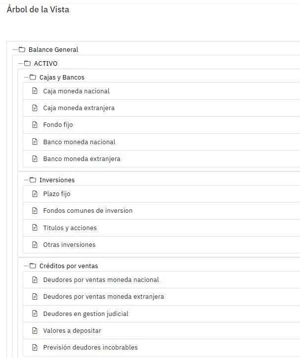
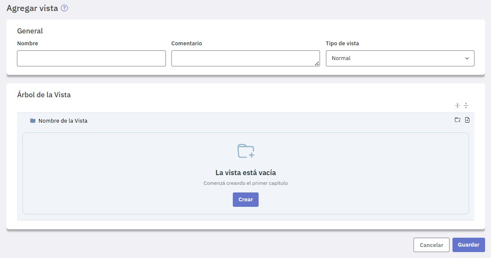
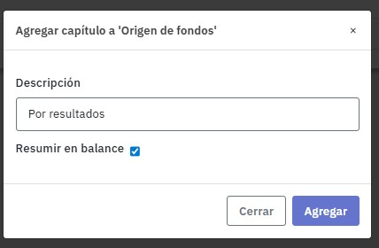
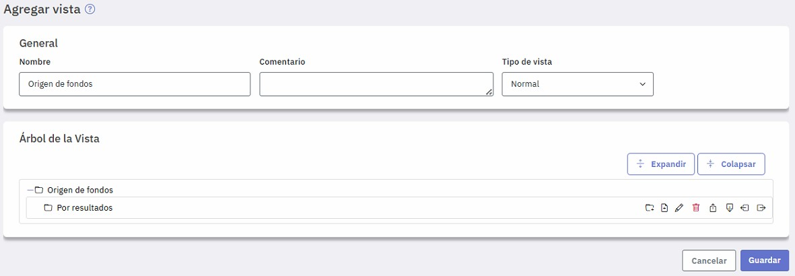
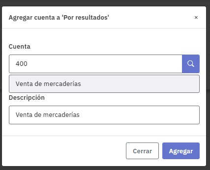
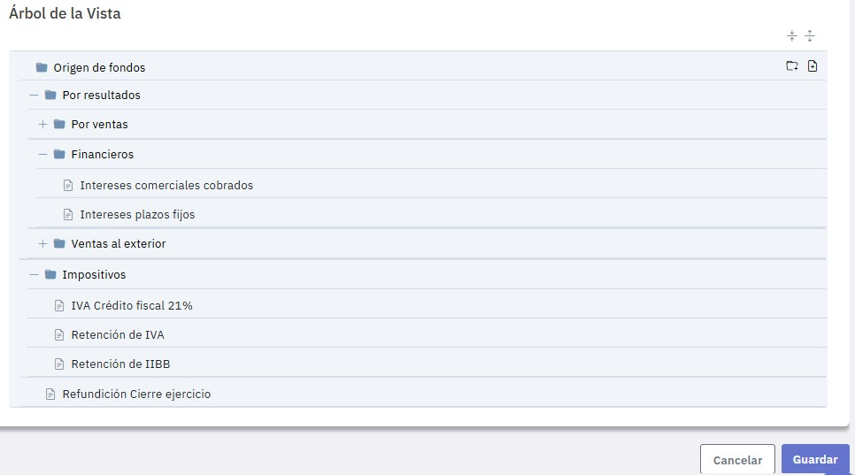
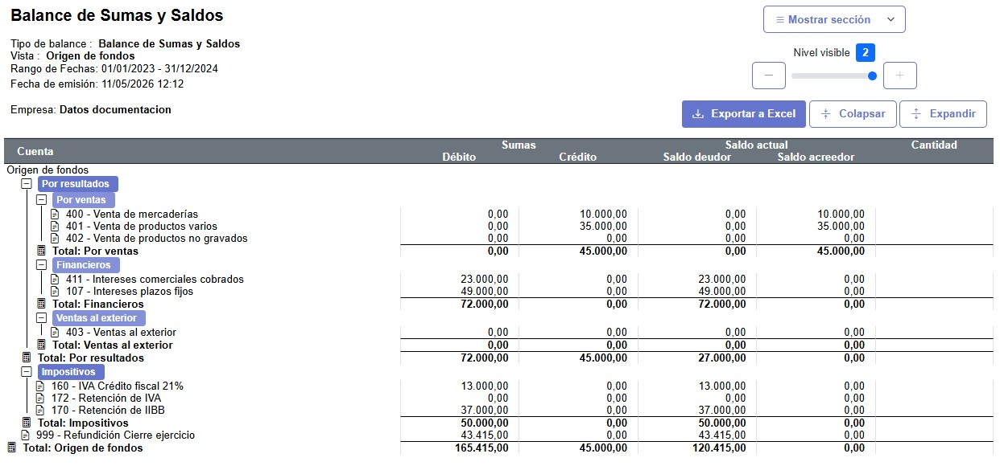

Vistas normales
Cuando consultás información contable (balances, mayores, entre otros), seguramente necesites agrupar determinadas cuentas incluyendo totalizadores parciales y finales. Para estos casos se utilizan las vistas normales.
Por ejemplo, al emitir un balance, se agrupan las cuentas del activo, pasivo y resultados y, cada uno de estos capítulos también incluye subagrupaciones, por ejemplo, activo corriente y no corriente que, a su vez, también poseen subniveles.
Para estos casos tenés que utilizar las vistas.

Las vistas están compuestas por algunas o por todas las cuentas del plan de cuentas e incorporan, además, una serie de títulos y subtítulos (o niveles) anidados jerárquicamente. Cada uno de ellos totaliza la información de los niveles y/o cuentas que dependen de él y, a su vez, aporta al subtotal correspondiente al subtítulo de nivel superior.
Cada nivel puede incluir subniveles y cuentas, éstas últimas no pueden tener asociado ningún subnivel. No hay límite en la cantidad de niveles ni cuentas a incluir en cada uno de ellos, la única limitación es que una cuenta solo puede aparecer una vez en toda la vista.
Para definir una vista, ingresá al menú "Vistas" y presioná “Agregar vista”.

Una vez que ingreses el nombre de la vista y un comentario (si lo consideras necesario) e indicas “Normal” en "Arbol de la vista", tenés que armar la estructura de niveles y cuentas a incluir en ella.
Si presionás "Crear" podés ingresar el primer capítulo.
También podés, mediante los íconos de la derecha y según lo que necesites:
- Agregar capítulo
- Agregar cuenta
Para agregar, por ejemplo, el capítulo “Por resultados”, indicá dicho nombre en "Descripción".

Si tildás “Resumir en balance” el capítulo exhibirá en el informe, el total correspondiente a la sumatoria de los subcapítulos y cuentas asociados; en caso contrario, incluirá sus importes en forma detallada.
Observá que se ofrecen una serie de iconos adicionales a los que comenzaste. Estos te permiten:
- Agregar capítulo
- Agregar cuentas
- Eliminar el capítulo
- Editarlo para modificar lo que necesites
- Moverlo en la estructura de árbol hacia arriba, abajo, derecha o izquierda

Para generar subniveles del definido, presioná el ícono de capítulo o de cuenta según corresponda y completá los datos.
Si agregás una cuenta, en "Descripción" se ofrece el nombre de la cuenta que, si fuese necesario, podés modificar específicamente para este vista.

De esta manera vas definiendo niveles y cuentas a incluir en ellos, moviéndolos si fuese necesario, con los iconos que disponés a tal efecto.
Finalmente queda definido el árbol con todos los niveles y cuentas que necesites.

Si emitís un balance utilizando esta vista obtenés un informe con los niveles definidos y los correspondientes subtotales y totales.
